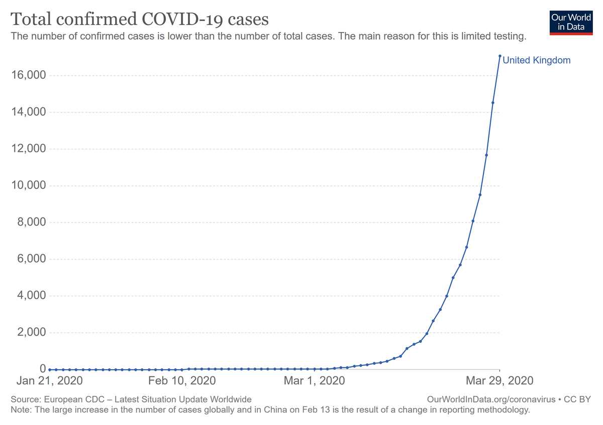
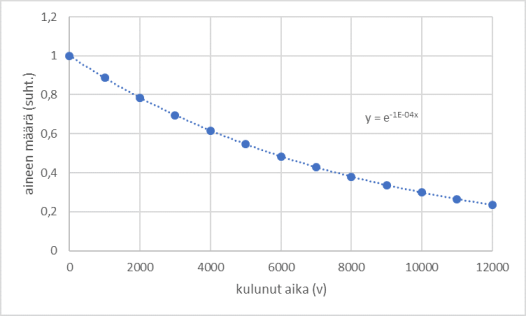

Eksponenttimalli
Eksponenttimalli#
Yleisesti eksponenttifunktio on muotoa \(y=ab^x\). Jos \(x\) kuvaa aikaa, niin kerroin \(a\) kuvaa arvoa ajan hetkellä \(x=0\), ja kerroin \(b\) kuvaa sitä, kuinka moninkertaiseksi funktion arvo kasvaa tai pienenee yhdessä aikayksikössä.
Jos \(b<1\), funktio on vähenevä (arvot pienenevät, kun \(x\) kasvaa) ja jos \(b>1\), funktio on kasvava (arvot kasvavat, kun \(x\) kasvaa). Eksponenttifunktion sovitus dataan onnistuu Excelin trendiviiva-toiminnolla.
Uutisistakin tuttu ”eksponentiaalinen kasvu” liittyy juuri tähän funktioon. Tällaisella kasvulla on se ominaisuus, että mitä suurempi on tarkasteltava arvo, sitä nopeammin se kasvaa. Aluksi kasvu saattaa olla hyvin hidastakin. Esimerkiksi jos tutkitaan tarttuvaa tautia ja oletetaan, että aluksi sairastuneita on vain yksi ja että jokainen sairastunut tartuttaa taudin yhdessä aikayksikössä kahteen muuhun ihmiseen, niin tartuntamäärää hetkellä \(x\) kuvaa malli \(y=1\cdot 2^x\). Tämän mallin mukaiset tartuntamäärät kasvavat alla olevan taulukon mukaisesti.
\(x\) |
0 |
2 |
4 |
6 |
8 |
10 |
12 |
14 |
16 |
|---|---|---|---|---|---|---|---|---|---|
\(y=2^x\) |
1 |
4 |
16 |
64 |
256 |
1024 |
4096 |
16384 |
65536 |
Koronaviruksenkin leviämisen todettiin pandemian alkuvaiheessa noudattavan eksponenttimallia (lähde). Rajoitustoimilla ja rokotuksilla pyrittiin pienentämään eksponenttifunktion kerrointa \(b\).

Eksponenttimallin erityistapaus \(y=ae^{kx}\) liittyy usein luonnon kasvu- tai pienenemisprosesseihin, kuten bakteerien määrän kasvuun tai lääkeaineen määrän pienenemiseen elimistössä. Kantaluku \(e\) on ns. Neperin luku (päättymätön desimaaliluku, 2.178…) ja eksponentin kerrointa \(k\) sanotaan kasvu- tai pienenemiskertoimeksi (tai vaimenemis-, vähenemiskerroin) riippuen siitä, onko se positiivinen (kasvu) vai negatiivinen (väheneminen).
Tällaista mallia kuvataan usein parametrilla puoliintumisaika, joka kertoo nimensä mukaisesti sen, kuinka pitkän ajan kuluessa arvo puolittuu. Puoliintumisajan avulla voidaan laskea mallin kerroin \(k\). Puoliintumisaikoja käytetään esimerkiksi radioaktiivisten aineiden hajoamiseen liittyvissä laskelmissa. Alla olevassa kuvassa on hiili-14-isotoopin hajoamiskäyrä. Kyseisen isotoopin puoliintumisaika on 5730 vuotta, ja sen pitoisuutta aineessa voidaan käyttää esineen iän arviointiin.
